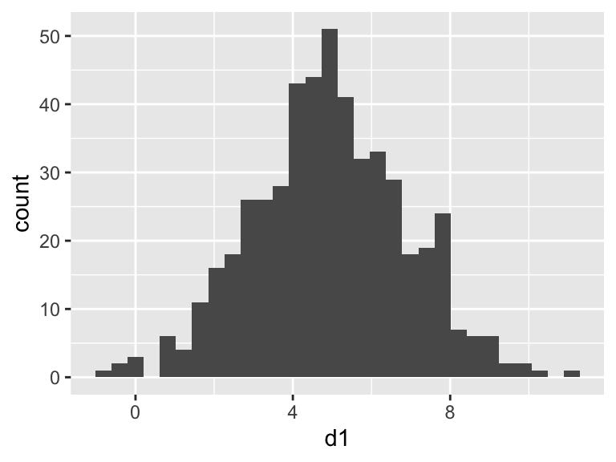
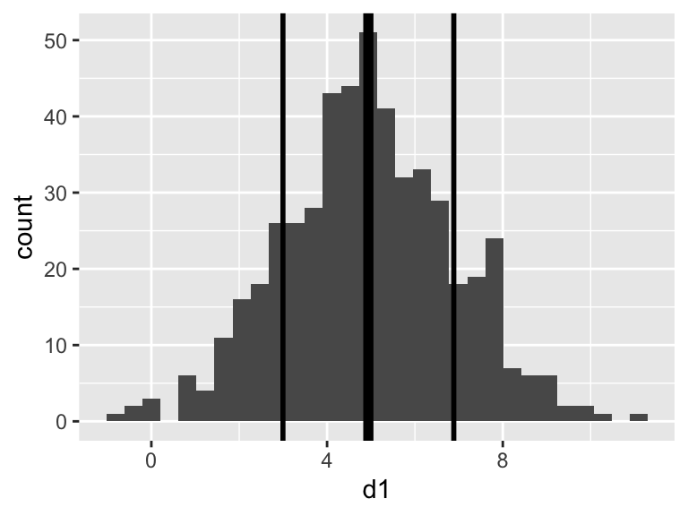
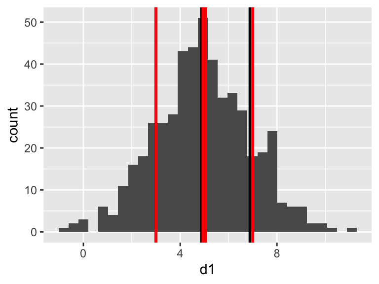
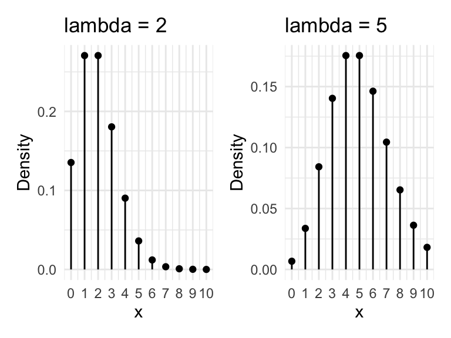
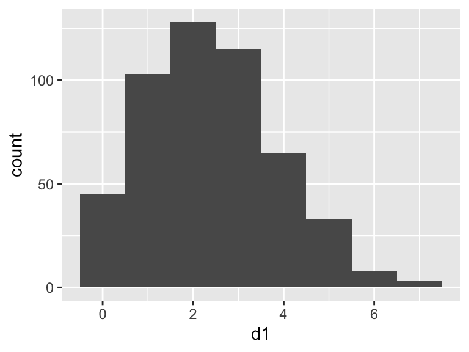
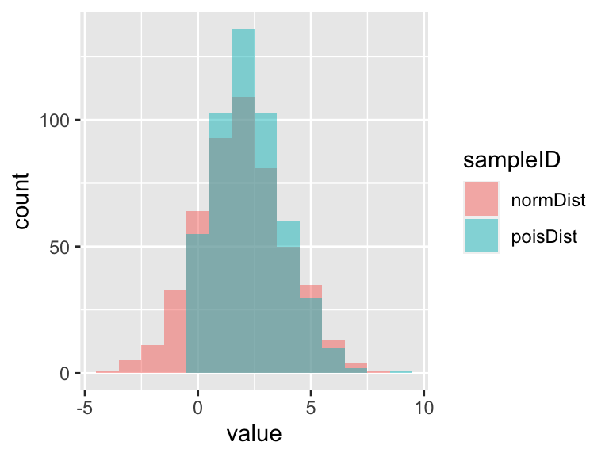

Chapter 10 Distributions and summarising data
This chapter covers two broad topics: the concept of statistical distributions and summarising data. It ends with a brief look at the “law of large numbers”.
10.1 Distributions
A statistical distribution is a description of the relative number of times (the frequency) possible outcomes will occur if repeated samples were to be taken. They are important because (1) they are useful descriptors of data and (2) they form the basis for assumptions in some statistical approaches. For example, statistical analyses often assume that residuals are normally distributed. The normal distribution is symmetrical (centred on the mean) and 68% of observations fall within 1 standard deviation (s.d.), and 95% of observations fall within 2 s.d..

We will use R to simulate some distributions, and explore these to get a feel for them.
R has functions for generating random numbers from different kinds of distributions. For example, the function rnorm will generate numbers from a normal distribution and rpois will generate numbers from a Poisson distribution.
10.2 Normal distribution
The rnorm function has three arguments. The first argument is simply the number of values you want to generate. Then, the second and third arguments specify the the mean and standard deviation values of the distribution (i.e. where the distribution is centred and how spread out it is).
The following command will produce 6 numbers from a distribution with a mean value of 5 and a standard deviation of 2.
## [1] 0.8860899 5.9511727 0.4674129 6.2696362 3.0969106 5.3058671Try changing the values of the arguments to alter the number of values you generate, and to alter the mean and standard deviation.
Let’s use this to generate a larger data frame, and then place markers for the various measures of “spread” onto a plot. Note that here I put a set of parentheses around the plot code to both display the result AND save the plot as an R object called p1
## d1
## Min. :-0.9862
## 1st Qu.: 3.6789
## Median : 4.9241
## Mean : 4.9399
## 3rd Qu.: 6.2712
## Max. :10.9317
We can calculate the mean and standard deviation using summarise (along with other estimates of “spread”). The mean and standard deviation values will be close (but not identical) to the values you set when you generated the distribution.
Note that here I put a set of parentheses around the code to both display the result AND save the result in an object called sv
(sv <- rn %>%
summarise(
meanEst = mean(d1),
sdEst = sd(d1),
varEst = var(d1),
semEst = sd(d1) / sqrt(n())
)
)## meanEst sdEst varEst semEst
## 1 4.939908 1.944357 3.780523 0.08695428Let’s use the function geom_vline to add some markers to the plot from above to show these values…
(p2 <- p1 +
geom_vline(xintercept = sv$meanEst, size = 2) + # mean
geom_vline(xintercept = sv$meanEst + sv$sdEst, size = 1) + # high
geom_vline(xintercept = sv$meanEst - sv$sdEst, size = 1) # low
)
We can compare these with the true values (the values we set when we generated the data), by adding them to the plot in a different colour (mean=5, sd=2).
(p3 <- p2 +
geom_vline(xintercept = 5, size = 2, colour = "red") + # mean
geom_vline(xintercept = 5 + 2, size = 1, colour = "red") + # high
geom_vline(xintercept = 5 - 2, size = 1, colour = "red") # low
)
Try repeating these plots with data that has different sample sizes. For example, use sample sizes of 5000, 250, 100, 50, 10. What do you notice? You should notice that for smaller sample sizes, the true distribution is not captured very well.
When you calculate the mean and standard deviation, you are actually fitting a simple model: the mean and standard deviation are parameters of the model, which assumes that the data follow a normal distribution.
Try adding lines for the standard error of the mean to one of your histograms.
10.3 Comparing normal distributions
Because normal distributions all have the same shape, it can be hard to grasp the effect of changing the distribution’s parameters viewing them in isolation. In this section you will write some code to compare two normal distributions. This approach can be useful when considering whether a proposed experiment will successfully detect a difference between treatment groups. We’ll look at this topic, known as “power analysis”, in greater detail in a later class. For now we will simply use ggplot to get a better feel for the normal distribution.
Let’s use rnorm to generate a larger data frame with two sets of numbers from different distributions: (d1: mean = 5, sd = 2; d2: mean = 8, sd = 1).
## d1 d2
## Min. :-0.9862 Min. : 4.628
## 1st Qu.: 3.6789 1st Qu.: 7.305
## Median : 4.9241 Median : 8.000
## Mean : 4.9399 Mean : 7.978
## 3rd Qu.: 6.2712 3rd Qu.: 8.719
## Max. :10.9317 Max. :11.495The summaries (above) show that the mean and the width of the distributions vary, but we should always plot our data. So lets make a plot in ggplot. In the dataset I created I have the data arranged by columns side-by-side, but ggplot needs the values to be arranged in a single column, and the identifier of the sample ID in a second column. I can use the function pivot_longer to rearrange the data into the required format.
rn <- pivot_longer(rn,
cols = c(d1, d2), names_to = "sampleID",
values_to = "value"
) # rearrange data
# Plot histograms using "identity", and make them transparent
ggplot(rn, aes(x = value, fill = sampleID)) +
geom_histogram(position = "identity", alpha = 0.5)Try changing the distributions and re-plotting them (you can change the number of samples, the mean values and the standard deviations).
10.4 Poisson distribution
The Poisson distribution is typically used when dealing with count data. The values must be whole numbers (integers) and they cannot be negative. The shape of the distributions varies with the “lambda” parameter, which is the arithmetic mean of the distribution. Due to the zero bounds, small values of lambda will give more skewed distributions.

Let’s generate and plot some Poisson distributed data.
## d1
## Min. :0.000
## 1st Qu.:1.000
## Median :2.000
## Mean :2.396
## 3rd Qu.:3.000
## Max. :7.000# Plot the data
(p1 <- ggplot(rp, aes(x = d1)) +
geom_histogram(binwidth = 1) # we know the bins will be 1
)
Try changing the value of lambda and look at how the shape changes.
Calculate the mean values and compare those with lambda
(they should be very similar).
Let’s calculate summary statistics of mean and standard deviation for this distribution
## meanEst sdEst
## 1 2.396 1.470888Now lets plot the mean and the 2 times the standard deviation on the graph. Remember that for the normal distribution (above) that 95% of the data were within 2 times the standard deviation.
p1 +
geom_vline(xintercept = sv$meanEst, size = 2) +
geom_vline(xintercept = sv$meanEst + 2 * sv$sdEst, size = 1) +
geom_vline(xintercept = sv$meanEst - 2 * sv$sdEst, size = 1)This looks like a TERRIBLE fit: The mean is not close to the most common value in the data set and the lower limit of the standard deviation indicates we should expect some negative values - this is impossible for Poisson data. The reason for this is that mean and standard deviation, and therefore standard error, are intended for normally distributed data. When the data come from other distributions we must take another approach.
So how should we summarise this data?
One approach is to report the median as a measure of “central tendency” instead of the mean, and to report “quantiles” of the data along with the range (i.e. minimum and maximum). Quantiles are simply the cut points that divide the data into parts. For example, the 25% quantile is the point where (if the data were arranged in order) one quarter of the values would fall below; the 50% quantile would mark the middle of the data (= the median); the 75% quantile would be the point when three-quarters of the data are below. You can calculate those things using dplyr’s summarise. However, you can also simply use the base R summary command.
(sv <- rp %>%
summarise(
minVal = min(d1),
q25 = quantile(d1, 0.25),
med = median(d1),
q75 = quantile(d1, 0.75),
maxVal = max(d1)
)
)## minVal q25 med q75 maxVal
## 1 0 1 2 3 7## Min. 1st Qu. Median Mean 3rd Qu. Max.
## 0.000 1.000 2.000 2.396 3.000 7.00010.5 Comparing normal and Poisson distributions
To get a better feel for how these two distributions differ, lets use the same approach we used above to plot two distributions together.
## normDist poisDist
## Min. :-3.9862 Min. :0.000
## 1st Qu.: 0.6789 1st Qu.:1.000
## Median : 1.9241 Median :2.000
## Mean : 1.9399 Mean :2.314
## 3rd Qu.: 3.2712 3rd Qu.:3.000
## Max. : 7.9317 Max. :9.000rn <- pivot_longer(rn,
cols = c(normDist, poisDist),
names_to = "sampleID", values_to = "value"
) # rearrange data
# Plot histograms using "identity", and make them transparent
ggplot(rn, aes(x = value, fill = sampleID)) +
geom_histogram(position = "identity", alpha = 0.5, binwidth = 1)
Try changing the arguments in the rnorm and
rpois commands to change the distributions.
Finally, let’s take another view of these data and look at them using box plots. Box plots are a handy alternative to histograms and many people prefer them.

You should see the main features of both distributions are captured pretty well. The normal distribution is approximately symmetrical and the Poisson distribution is skewed (one whisker longer then the other) and cannot be <0. Which graph to you prefer? (there’s no right answer!)
10.6 The law of large numbers
The law of large numbers is one of the most important ideas in probability. It states that As sample grows large, the sample mean converges to the population mean. In other words, as sample size increases, you get a better idea what the true value of the mean is.
In this section you will demonstrate this law using coin tosses or dice throws. Since it is tiresome to toss coins hundreds of times it is convenient to simulate the data using R. Conceptually, what we are trying to do here is treat the dice rolling/coin tossing as experiments where the aim is to find the probability of getting a head/tail, or a particular number on the dice. It is useful to use dice and coins because we are pretty sure that we know what the “true” answer is: the probability of throwing a 1 on a fair dice is 1/6, while the probability of throwing a head/tail with a flipped coin is 0.5.
10.6.1 Coin flipping
Here’s how to simulate a coin toss in R.
## [1] "Tails"And here is how to simulate 6 coin tosses and make a table of the results. Note, we must use the replace = TRUE argument. Please ask if you don’t understand why this is necessary.
## result
## Heads Tails
## 4 2We can “wrap” the table function with the as.data.frame to turn the data into a data frame that works with ggplot You’ll probably get different results than me because this is a random process:
result <- data.frame(result = sample(coinToss, 6, replace = TRUE))
ggplot(result, aes(x = result)) +
geom_bar()
Figure 10.1: Barplot of 6 simulated coin tosses
Try this several times with small sample sizes (e.g. 4, 6, 8) and see what happens to the proportions of heads/tails. Think about what the expected outcome should be. What do you notice?
Now increase the sample size (e.g. to 20, 50, 100) and see what happens to the proportions of heads/tails. What do you notice?
10.7 Exercise: Virtual dice
Let’s try the same kind of thing with the roll of (virtual) dice.
Here’s how to do one roll of the dice:
[1] 3
Now it’s your turn…
Simulate 10 rolls of the dice, and make a table of results using R.
Now simulate 90 rolls of the dice. Put the results into a
data.frame(see the chapter An R refresher for help with this). Plot the results as a bar plot usinggeom_baringgplot. Add a line usinggeom_ablineto show the expected result based on what you know about probability.Try adjusting the code to simulate dice rolls with small (say, 30) and large (say, 600, or 6000, or 9000) samples. Observe what happens to the proportions, and compare them to the expected value. What does this tell you about the importance of sample size when trying to estimate real phenomena?